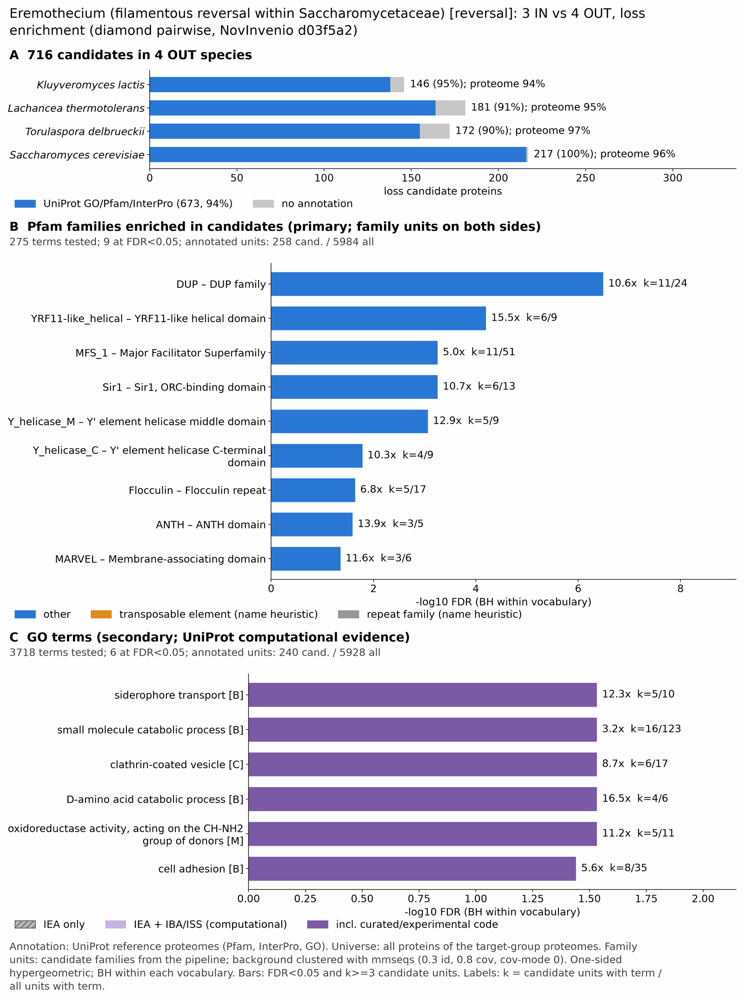

yc rev eremothecium: functional enrichment (loss)
One-sided hypergeometric test per term; Benjamini-Hochberg FDR within each scope, level and vocabulary. Candidates are the loss candidates: gene families present in the OUT group and absent from the IN group. Universe: proteome. Background clustered: True (20488 sequences in 7005 clusters, mmseqs easy-cluster --min-seq-id 0.3 -c 0.8). Family level: one unit per candidate family and per background cluster.
Sources: Pfam: 2026-01-27-Pfam38.2; InterPro entries: 110.0; GO: releases/2026-07-26; analysis generated 2026-10-24T14:57:38. Source tables: /bigdata/stajichlab/jstajich/projects/NovInvenio_Investigations/studies/fungi/yeast_convergence/yc_rev_eremothecium/analysis/enrichment/outputs/loss/proteome_clustered.
Full record: PROVENANCE. Run report: report.html.
- Annotation provenance is not fully recorded: PROVENANCE.yaml lists the per-species annotation files and their checksums, but not the UniProt release they come from.
- GO results are secondary. GO annotations include computational evidence (IEA, IBA); the GO evidence column shows if a term has non-IEA support.
- Candidate families (pipeline clustering of candidates) and background clusters (mmseqs clustering of the background proteome) are made by different runs, so family-level counts are not fully comparable.
Summary figure

Annotation coverage
Fraction of proteins with at least one term per vocabulary. Universe = all proteins of the species; candidates = the candidate set.
| Species | Set | Proteins | Pfam | Pfam clan | InterPro | GO | Any |
|---|---|---|---|---|---|---|---|
| Kluylact | universe | 5071 | 90.6% | 68.8% | 93.2% | 84.4% | 93.8% |
| Kluylact | candidates | 146 | 86.3% | 69.2% | 91.8% | 74.0% | 94.5% |
| Lachther | universe | 5093 | 91.7% | 69.8% | 94.6% | 85.0% | 95.0% |
| Lachther | candidates | 181 | 84.5% | 67.4% | 88.9% | 65.2% | 90.6% |
| Torudelb | universe | 4974 | 92.9% | 70.1% | 95.3% | 90.9% | 96.5% |
| Torudelb | candidates | 172 | 84.9% | 66.3% | 86.1% | 70.9% | 90.1% |
| Scer | universe | 6066 | 88.6% | 66.3% | 90.9% | 94.8% | 96.4% |
| Scer | candidates | 217 | 87.6% | 64.5% | 91.7% | 97.7% | 99.5% |
| ALL_OUT | universe | 21204 | 90.8% | 68.6% | 93.4% | 89.1% | 95.5% |
| ALL_OUT | candidates | 716 | 85.9% | 66.6% | 89.7% | 78.2% | 94.0% |
Tests summary
Per vocabulary: terms with FDR < 0.05 / terms tested. Protein level counts proteins; family level counts candidate families and background clusters.
| Scope | Level | Cand. units | Pfam sig / tested | Pfam clan sig / tested | InterPro sig / tested | GO sig / tested |
|---|---|---|---|---|---|---|
| whole_set | family | 316 | 9 / 275 | 0 / 212 | 9 / 702 | 6 / 3718 |
| whole_set | protein | 716 | 61 / 1358 | 24 / 369 | 141 / 3177 | 183 / 5506 |
| Kluylact | family | 134 | 0 / 148 | 0 / 171 | 0 / 445 | 12 / 1944 |
| Kluylact | protein | 146 | 3 / 187 | 1 / 184 | 6 / 536 | 19 / 2051 |
| Lachther | family | 163 | 2 / 147 | 1 / 175 | 1 / 446 | 1 / 1928 |
| Lachther | protein | 181 | 1 / 193 | 2 / 185 | 1 / 544 | 10 / 2056 |
| Scer | family | 171 | 4 / 167 | 0 / 174 | 3 / 487 | 0 / 3441 |
| Scer | protein | 217 | 10 / 269 | 1 / 200 | 22 / 711 | 38 / 3712 |
| Torudelb | family | 158 | 0 / 148 | 0 / 176 | 0 / 443 | 0 / 3138 |
| Torudelb | protein | 172 | 1 / 195 | 0 / 188 | 1 / 544 | 1 / 3235 |
Top 25 Pfam terms (whole set, family level)
25 rows shown, ordered by FDR then p-value; 9 have FDR < 0.05 (bold). 1 are tagged TE: transposable-element families, flagged by name (heuristic, not a test).
| Term | Name | k / N cand. | n / M bg | Fold | FDR (BH) |
|---|---|---|---|---|---|
| PF00674 | DUP: DUP family | 11 / 258 | 24 / 5984 | 10.63 | 3.23e-07 |
| PF29830 | YRF11-like_helical: YRF11-like helical domain | 6 / 258 | 9 / 5984 | 15.463 | 6.28e-05 |
| PF07690 | MFS_1: Major Facilitator Superfamily | 11 / 258 | 51 / 5984 | 5.003 | 5.54e-04 |
| PF11603 | Sir1: Sir1, ORC-binding domain | 6 / 258 | 13 / 5984 | 10.705 | 5.54e-04 |
| PF29494 | Y_helicase_M: Y' element helicase middle domain | 5 / 258 | 9 / 5984 | 12.885 | 8.62e-04 |
| PF29498 | Y_helicase_C: Y' element helicase C-terminal domain | 4 / 258 | 9 / 5984 | 10.308 | 0.016 |
| PF00624 | Flocculin: Flocculin repeat | 5 / 258 | 17 / 5984 | 6.822 | 0.023 |
| PF07651 | ANTH: ANTH domain | 3 / 258 | 5 / 5984 | 13.916 | 0.026 |
| PF01284 | MARVEL: Membrane-associating domain | 3 / 258 | 6 / 5984 | 11.597 | 0.044 |
| PF04082 | Fungal_trans: Fungal specific transcription factor domain | 8 / 258 | 54 / 5984 | 3.436 | 0.055 |
| PF04193 | PQ-loop: PQ loop repeat | 3 / 258 | 7 / 5984 | 9.94 | 0.057 |
| PF00270 | DEAD: DEAD/DEAH box helicase | 7 / 258 | 44 / 5984 | 3.69 | 0.057 |
| PF01266 | DAO: FAD dependent oxidoreductase | 3 / 258 | 8 / 5984 | 8.698 | 0.080 |
| PF07727 | RVT_2: Reverse transcriptase (RNA-dependent DNA polymerase) TE | 2 / 258 | 5 / 5984 | 9.278 | 0.292 |
| PF15700 | DUF4667: Domain of unknown function (DUF4667) | 2 / 258 | 5 / 5984 | 9.278 | 0.292 |
| PF17357 | FIT1_2: Facilitor Of iron transport 1 and 2 | 2 / 258 | 5 / 5984 | 9.278 | 0.292 |
| PF01370 | Epimerase: NAD dependent epimerase/dehydratase family | 2 / 258 | 6 / 5984 | 7.731 | 0.378 |
| PF11766 | Candida_ALS_N: Agglutinin-like protein, N-terminal domain | 2 / 258 | 6 / 5984 | 7.731 | 0.378 |
| PF28838 | DIA1: DIA1 | 2 / 258 | 8 / 5984 | 5.798 | 0.632 |
| PF00271 | Helicase_C: Helicase conserved C-terminal domain | 6 / 258 | 63 / 5984 | 2.209 | 0.715 |
| PF00248 | Aldo_ket_red: Aldo/keto reductase family | 2 / 258 | 9 / 5984 | 5.154 | 0.715 |
| PF00660 | SRP1_TIP1: Seripauperin and TIP1 family | 2 / 258 | 10 / 5984 | 4.639 | 0.829 |
| PF00172 | Zn_clus: Fungal Zn(2)-Cys(6) binuclear cluster domain | 7 / 258 | 99 / 5984 | 1.64 | 1.000 |
| PF00096 | zf-C2H2: Zinc finger, C2H2 type | 4 / 258 | 51 / 5984 | 1.819 | 1.000 |
| PF00042 | Globin: Globin | 1 / 258 | 5 / 5984 | 4.639 | 1.000 |
Top 25 InterPro terms (whole set, family level)
25 rows shown, ordered by FDR then p-value; 9 have FDR < 0.05 (bold).
| Term | Name | k / N cand. | n / M bg | Fold | FDR (BH) |
|---|---|---|---|---|---|
| IPR001142 | Family:Yeast membrane protein DUP/COS | 11 / 267 | 24 / 6159 | 10.573 | 8.80e-07 |
| IPR063767 | Domain:YRF11-like, helical domain | 6 / 267 | 9 / 6159 | 15.378 | 1.66e-04 |
| IPR021646 | Domain:Sir1, ORC-binding domain | 6 / 267 | 13 / 6159 | 10.646 | 0.001 |
| IPR011701 | Family:Major facilitator superfamily | 11 / 267 | 51 / 6159 | 4.975 | 0.001 |
| IPR061931 | Domain:Y' element helicase, middle domain | 5 / 267 | 9 / 6159 | 12.815 | 0.002 |
| IPR036259 | Homologous_superfamily:MFS transporter superfamily | 14 / 267 | 88 / 6159 | 3.67 | 0.002 |
| IPR063730 | Domain:Y' element helicase, C-terminal domain | 4 / 267 | 9 / 6159 | 10.252 | 0.037 |
| IPR050978 | Family:Y' element ATP-dependent helicase | 4 / 267 | 10 / 6159 | 9.227 | 0.046 |
| IPR001389 | Repeat:Flocculin | 5 / 267 | 17 / 6159 | 6.785 | 0.046 |
| IPR011417 | Domain:AP180 N-terminal homology (ANTH) domain | 3 / 267 | 5 / 6159 | 13.84 | 0.053 |
| IPR051059 | Family:Transcription factor verF-like | 4 / 267 | 12 / 6159 | 7.689 | 0.079 |
| IPR008253 | Domain:Marvel domain | 3 / 267 | 6 / 6159 | 11.534 | 0.079 |
| IPR037240 | Homologous_superfamily:ORC1-binding domain | 3 / 267 | 6 / 6159 | 11.534 | 0.079 |
| IPR007219 | Domain:Xylanolytic transcriptional activator-like, regulatory domain | 8 / 267 | 55 / 6159 | 3.355 | 0.113 |
| IPR006603 | Repeat:PQ-loop repeat | 3 / 267 | 7 / 6159 | 9.886 | 0.113 |
| IPR011545 | Domain:DEAD/DEAH-box helicase domain | 7 / 267 | 44 / 6159 | 3.67 | 0.113 |
| IPR006076 | Domain:FAD dependent oxidoreductase | 3 / 267 | 8 / 6159 | 8.65 | 0.158 |
| IPR013809 | Domain:ENTH domain | 3 / 267 | 9 / 6159 | 7.689 | 0.217 |
| IPR013103 | Domain:Reverse transcriptase, RNA-dependent DNA polymerase | 2 / 267 | 5 / 6159 | 9.227 | 0.548 |
| IPR031426 | Family:Protein of unknown function DUF4667 | 2 / 267 | 5 / 6159 | 9.227 | 0.548 |
| IPR035323 | Family:Facilitator of iron transport 2 | 2 / 267 | 5 / 6159 | 9.227 | 0.548 |
| IPR038770 | Homologous_superfamily:Sodium/solute symporter superfamily | 2 / 267 | 5 / 6159 | 9.227 | 0.548 |
| IPR014001 | Domain:Helicase superfamily 1/2, ATP-binding domain | 7 / 267 | 63 / 6159 | 2.563 | 0.564 |
| IPR013087 | Domain:Zinc finger C2H2-type | 8 / 267 | 82 / 6159 | 2.25 | 0.567 |
| IPR001509 | Domain:NAD-dependent epimerase/dehydratase | 2 / 267 | 6 / 6159 | 7.689 | 0.567 |
Top 15 GO terms (whole set, family level) — secondary, computational evidence (IEA/IBA) included
15 rows shown, ordered by FDR then p-value; 6 have FDR < 0.05 (bold).
| Term | Name | k / N cand. | n / M bg | Fold | FDR (BH) | GO evidence | Families with non-IEA |
|---|---|---|---|---|---|---|---|
| GO:0015891 | biological_process:siderophore transport | 5 / 240 | 10 / 5928 | 12.35 | 0.029 | has_non_IEA | 4 |
| GO:0044282 | biological_process:small molecule catabolic process | 16 / 240 | 123 / 5928 | 3.213 | 0.029 | has_non_IEA | 10 |
| GO:0030136 | cellular_component:clathrin-coated vesicle | 6 / 240 | 17 / 5928 | 8.718 | 0.029 | has_non_IEA | 4 |
| GO:0019478 | biological_process:D-amino acid catabolic process | 4 / 240 | 6 / 5928 | 16.467 | 0.029 | has_non_IEA | 1 |
| GO:0016638 | molecular_function:oxidoreductase activity, acting on the CH-NH2 group of donors | 5 / 240 | 11 / 5928 | 11.227 | 0.029 | has_non_IEA | 2 |
| GO:0007155 | biological_process:cell adhesion | 8 / 240 | 35 / 5928 | 5.646 | 0.036 | has_non_IEA | 3 |
| GO:0006012 | biological_process:galactose metabolic process | 5 / 240 | 14 / 5928 | 8.821 | 0.073 | has_non_IEA | 4 |
| GO:0030312 | cellular_component:external encapsulating structure | 13 / 240 | 99 / 5928 | 3.243 | 0.073 | has_non_IEA | 10 |
| GO:0009063 | biological_process:amino acid catabolic process | 8 / 240 | 41 / 5928 | 4.82 | 0.079 | has_non_IEA | 5 |
| GO:0016491 | molecular_function:oxidoreductase activity | 26 / 240 | 315 / 5928 | 2.039 | 0.109 | has_non_IEA | 13 |
| GO:0170044 | biological_process:non-proteinogenic amino acid catabolic process | 4 / 240 | 10 / 5928 | 9.88 | 0.109 | has_non_IEA | 1 |
| GO:0009277 | cellular_component:fungal-type cell wall | 12 / 240 | 97 / 5928 | 3.056 | 0.109 | has_non_IEA | 9 |
| GO:0005618 | cellular_component:cell wall | 12 / 240 | 98 / 5928 | 3.024 | 0.109 | has_non_IEA | 9 |
| GO:0000128 | biological_process:flocculation | 5 / 240 | 18 / 5928 | 6.861 | 0.109 | IEA_only | 0 |
| GO:0098610 | biological_process:adhesion between unicellular organisms | 5 / 240 | 18 / 5928 | 6.861 | 0.109 | IEA_only | 0 |
Actin cytoskeleton controls
Known actin-related families and how many of their proteins pass each filter. Protein ID columns are left out.
| control | pfam_ids | desc_regex | OUT_universe | OUT_in_matrix | OUT_pass_outgroup_rule | candidates | near_miss_in1 | near_miss_in2 | n_Kluylact | n_Lachther | n_Torudelb | n_Scer | n_Eremgoss | n_Eremcymb | n_Eremsine |
|---|---|---|---|---|---|---|---|---|---|---|---|---|---|---|---|
| Arp2/3 ARPC2 (P34-Arc) | PF04045 | 4 | 4 | 4 | 0 | 0 | 0 | 1 | 1 | 1 | 1 | 1 | 1 | 1 | |
| Arp2/3 ARPC3 (P21-Arc) | PF04062 | 4 | 4 | 4 | 0 | 0 | 0 | 1 | 1 | 1 | 1 | 1 | 1 | 1 | |
| Arp2/3 ARPC4 | PF05856 | 4 | 4 | 4 | 0 | 0 | 0 | 1 | 1 | 1 | 1 | 1 | 1 | 1 | |
| Arp2/3 ARPC5 (P16-Arc) | PF04699 | 4 | 4 | 4 | 0 | 0 | 0 | 1 | 1 | 1 | 1 | 1 | 1 | 1 | |
| Arp2/3 ARPC1 (description only) | arp2/3 complex.*(41|p41|subunit 1)|ARPC1 | 0 | 0 | 0 | 0 | 0 | 0 | 0 | 0 | 0 | 0 | 0 | 0 | 0 | |
| Arp2 / Arp3 (description only) | actin-related protein (2|3)\b|\bARP[23]\b | 26 | 26 | 26 | 0 | 0 | 0 | 6 | 6 | 7 | 7 | 6 | 7 | 6 | |
| WAVE complex NCKAP1 | PF09735 | 0 | 0 | 0 | 0 | 0 | 0 | 0 | 0 | 0 | 0 | 0 | 0 | 0 | |
| WAVE complex CYFIP (FragX_IP) | PF05994 | 0 | 0 | 0 | 0 | 0 | 0 | 0 | 0 | 0 | 0 | 0 | 0 | 0 | |
| WAVE complex ABI | PF07815|PF27594 | 0 | 0 | 0 | 0 | 0 | 0 | 0 | 0 | 0 | 0 | 0 | 0 | 0 | |
| SCAR/WAVE (SCAR_helical) | PF27569 | 0 | 0 | 0 | 0 | 0 | 0 | 0 | 0 | 0 | 0 | 0 | 0 | 0 | |
| WASP family (WH1) | PF00568 | 4 | 4 | 4 | 0 | 0 | 0 | 1 | 1 | 1 | 1 | 1 | 1 | 1 | |
| WH2 motif (WASP, WAVE, others) | PF02205 | 8 | 8 | 8 | 0 | 0 | 0 | 2 | 2 | 2 | 2 | 2 | 2 | 2 | |
| Formin FH2 | PF02181 | 8 | 8 | 8 | 0 | 0 | 0 | 2 | 2 | 2 | 2 | 3 | 3 | 3 | |
| Formin Drf_GBD / Drf_FH3 / Drf_DAD | PF06371|PF06367|PF06345 | 7 | 7 | 7 | 0 | 0 | 0 | 2 | 2 | 2 | 1 | 2 | 3 | 3 | |
| Ena/VASP (VASP_tetra) | PF08776 | 0 | 0 | 0 | 0 | 0 | 0 | 0 | 0 | 0 | 0 | 0 | 0 | 0 | |
| Coronin (description only) | coronin | 4 | 4 | 4 | 0 | 0 | 0 | 1 | 1 | 1 | 1 | 1 | 1 | 1 | |
| Cortactin (HS1_rep) | PF02218 | 0 | 0 | 0 | 0 | 0 | 0 | 0 | 0 | 0 | 0 | 0 | 0 | 0 | |
| Myosin 2 tail (Myosin_tail_1) | PF01576 | 0 | 0 | 0 | 0 | 0 | 0 | 0 | 0 | 0 | 0 | 0 | 0 | 0 | |
| Myosin head (all myosins) | PF00063 | 14 | 14 | 14 | 0 | 0 | 0 | 3 | 3 | 3 | 5 | 3 | 3 | 3 |
Page written by bin/generate_enrichment_page.py.